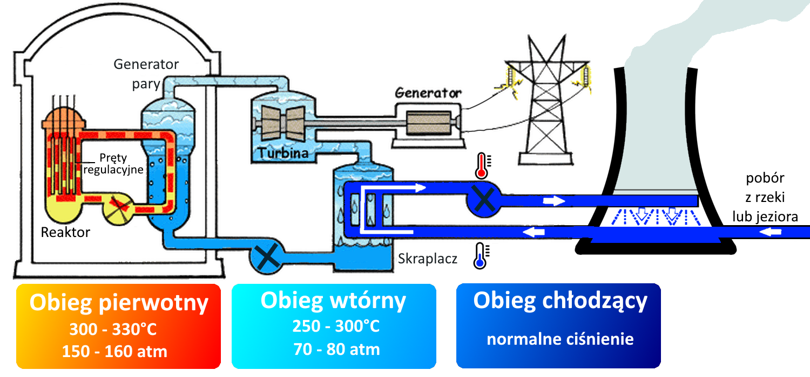

Elektrownia jądrowa składa się z wielu elementów, które są niezbędne do wytwarzania energii elektrycznej. Jednym z najważniejszych elementów elektrowni jest reaktor jądrowy, w którym zachodzą reakcje nuklearne i wytwarzana jest energia cieplna. Reaktor jądrowy jest umieszczony w specjalnym bloku reaktora, który jest wypełniony wodą, która służy do chłodzenia i regulacji temperatury reaktora. W elektrowni jądrowej znajdują się także turbiny, które przekształcają energię cieplną w energię mechaniczną, napędzając generatory, które wytwarzają prąd elektryczny. W elektrowni jądrowej znajdują się także zbiorniki paliwa, w których przechowywane są paliwa jądrowe, takie jak uran lub pluton. Paliwo to jest umieszczone w prętach paliwowych, które są umieszczone w reaktorze jądrowym. Podczas budowy elektrowni jądrowej muszą być uwzględnione różne zabezpieczenia, takie jak zabezpieczenia przeciwwybuchowe, przeciwpożarowe, przeciwpowodziowe oraz systemy awaryjne i bezpieczeństwa. Elektrownia jądrowa musi być zbudowana w taki sposób, aby była bezpieczna dla pracowników i dla środowiska naturalnego. W elektrowni jądrowej istnieją różne typy reaktorów jądrowych, takie jak reaktory wodne ciśnieniowe (PWR), reaktory wodne wrzące (BWR), reaktory ciężkowodne, reaktory grafytowo-moderowane i reaktory szybkobieżne. Każdy typ reaktora jądrowego ma swoje zalety i wady oraz specyficzne wymagania dotyczące bezpieczeństwa i zabezpieczeń. Budowa elektrowni jądrowej jest procesem skomplikowanym i wymagającym wiele pracy, planowania i koordynacji. Jednak gdy elektrownia jest zbudowana i rozpocznie produkcję energii elektrycznej, może zapewnić wiele korzyści dla społeczeństwa, takich jak niskie koszty produkcji energii i niska emisja gazów cieplarnianych.
Istnieje wiele różnych typów reaktorów jądrowych, ale najczęściej stosowane są trzy główne typy: reaktory wodne ciśnieniowe (PWR), reaktory wodne wrzące (BWR) i reaktory ciężkowodne (HWR). Reaktory wodne ciśnieniowe (PWR) są najczęściej stosowane na świecie. W tych reaktorach woda jest używana jako chłodziwo i moderator neutronów. Woda wchodzi w reaktor pod ciśnieniem i jest ogrzana przez reakcje jądrowe. Ciepło jest następnie przekazywane do generatora pary, który przekształca wodę w parę, która napędza turbinę i generator elektryczny. Reaktory wodne wrzące (BWR) są podobne do reaktorów PWR, ale woda jest tutaj wykorzystywana zarówno jako chłodziwo, jak i moderator neutronów. Woda w reaktorze wrze i przepływa bezpośrednio przez turbinę, napędzając ją bezpośrednio. Reaktory BWR są mniej skomplikowane niż reaktory PWR i wymagają mniejszej ilości wody do chłodzenia. Reaktory ciężkowodne (HWR) są stosunkowo nowym typem reaktora jądrowego. W tych reaktorach ciężka woda jest używana jako chłodziwo i moderator neutronów. Ciężka woda jest podobna do zwykłej wody, ale zawiera więcej atomów deuteru, co czyni ją lepszym moderator neutronów. Reaktory HWR mają wiele zalet, w tym niższe wymagania dotyczące paliwa i wysoką efektywność wytwarzania energii.
Budowa elektrowni jądrowej wymaga uwzględnienia wielu zabezpieczeń, aby zapewnić bezpieczeństwo pracy elektrowni oraz ochronę ludzi i środowiska. Oto kilka zabezpieczeń, które są szczególnie ważne: Zabezpieczenia przed wyciekiem promieniowania: elektrownia jądrowa musi być zaprojektowana w taki sposób, aby zapobiegać wyciekom promieniowania poza jej granice. Muszą być stosowane skuteczne systemy kontroli i monitorowania poziomu promieniowania, a personel musi być przeszkolony w zakresie postępowania w przypadku awarii. Systemy chłodzenia: reaktory jądrowe wymagają stałego chłodzenia, aby uniknąć przegrzania i uszkodzenia paliwa jądrowego. W przypadku awarii systemu chłodzenia, elektrownia musi mieć awaryjne systemy, które zapewnią chłodzenie reaktora, takie jak np. układ wstrzykiwania wody. Zabezpieczenia przed pożarem: elektrownia musi być wyposażona w zaawansowane systemy przeciwpożarowe, które zapobiegną pożarom i ograniczą ich skutki, jeśli wystąpią. Muszą być stosowane odpowiednie materiały izolacyjne i odpornych na ogień, a obiekty muszą być zaprojektowane w sposób umożliwiający szybką ewakuację. Zabezpieczenia przed włamaniem się osób niepowołanych: elektrownia musi być chroniona przed osobami niepowołanymi, które mogą uszkodzić lub przyczynić się do awarii systemów. Muszą być stosowane zaawansowane systemy monitorowania i ochrony, a personel musi być przeszkolony w zakresie bezpieczeństwa i postępowania w przypadku podejrzeń o włamanie lub sabotaż. To tylko kilka zabezpieczeń, które muszą być uwzględnione podczas budowy elektrowni jądrowej. Bezpieczeństwo elektrowni jest kluczowe dla jej skutecznego i bezpiecznego działania oraz dla ochrony ludzi i środowiska przed szkodliwym wpływem promieniowania.
Niedokończona elektrownia jądrowa Lemóniz w Hiszpanii. Jej budowa została przerwana w 1983 roku, gdy program ekspansji energetyki jądrowej w Hiszpanii został anulowany w wyniku zmiany rządu. Dwa reaktory PWR o mocy 900 MW każdy były już prawie ukończone, ale nigdy nie zostały uruchomione.
 >